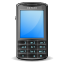
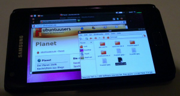
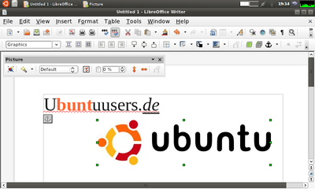

Ubuntu auf dem Smartphone
Archivierte Anleitung
Dieser Artikel wurde archiviert, da er - oder Teile daraus - nur noch unter einer älteren Ubuntu-Version nutzbar ist. Diese Anleitung wird vom Wiki-Team weder auf Richtigkeit überprüft noch anderweitig gepflegt. Zusätzlich wurde der Artikel für weitere Änderungen gesperrt.
Artikel für fortgeschrittene Anwender
Dieser Artikel erfordert mehr Erfahrung im Umgang mit Linux und ist daher nur für fortgeschrittene Benutzer gedacht.
Zum Verständnis dieses Artikels sind folgende Seiten hilfreich:
 Inzwischen sind Smartphones und Tablets extrem leistungsfähig geworden. Somit stellt sich auch die Frage, ob es denn möglich ist, ein solches mobiles Gerät (ein Smartphone oder Tablet mit Android) mit Ubuntu zu betreiben. Hier soll ein Weg, dies zu realisieren, aufgezeigt werden, der die ursprüngliche Funktionalität des Gerätes nicht mindert und man somit das Originalbetriebssystem weiterhin nutzen kann.
Welche Möglichkeiten offenbart die hier gezeigte Ubuntu-Installation:
Nutzen einer grafischen Arbeitsumgebung, beispielsweise LXDE
Nutzen der meisten Programme, beispielsweise Firefox, Pidgin, LibreOffice
Was mit dieser Methode leider nicht möglich ist:
Tonausgabe funktioniert nicht, somit sind Multimediaprogramme weitgehend nutzlos
Nutzen von telefonspezifischen Schnittstellen wie Telefonieren, SMS, GPS, ...
Voraussetzungen¶

Das Smartphone sollte einigermaßen leistungsfähig sein, schließlich wurde Ubuntu für PCs entwickelt. Ein Dualcore-Prozessor, der mit 800Mhz getaktet ist, sowie 512MB Arbeitsspeicher sollten grundlegenden Anforderungen bereits gewachsen sein.
Der Kernel des Android-Systems muss "gerootet" sein. Das bedeutet, man spielt einen neuen Linux-Kernel auf das Handy, der Root-Zugriff und erweiterte Funktionalität bietet.
Der Kernel muss mit loop-Devices umgehen können. Dies ist bei den meisten Root-Kerneln der Fall.
Auf dem Telefon sollte genug Speicherplatz vorhanden sein, um in der Ubuntu-Umgebung viele Programme installieren zu können. Hier sind 4GB ein sehr guter Wert. Eine durchschnittliche Installation mit LXDE als Oberfläche, Browser, Officepaket und ein paar weiteren Kleinigkeiten benötigt etwa 2-3 GiB an Speicherplatz.
Achtung!
Die Installation von Ubuntu setzt die Installation eines ROOT-Kernels voraus. Dieser Schritt lässt jedoch üblicherweise die Herstellergarantie des Smartphones verfallen!
Erfolgreich getestete Android-Geräte:
Samsung GalaxyTab 10.1
Samsung Galaxy S2 GT-I9100
Sony Xperia S (LT26I)
Installation¶
Ubuntu herunterladen¶
Es gibt spezielle Ubuntu-Abbilder, die für Server gedacht sind und inklusive der Paketquellen für die ARM-Plattform übersetzt sind. Somit stellen sie eine ideale Basis für das Vorhaben dar. Herunterladen kann man sie Downloadseite  . Dort die gewünschte Version auswählen, auf "release" klicken und dann in der Liste eine Datei auswählen, die die Worte server und arm enthält, als auch auf .img.gz endet.
. Dort die gewünschte Version auswählen, auf "release" klicken und dann in der Liste eine Datei auswählen, die die Worte server und arm enthält, als auch auf .img.gz endet.
Abbild aufteilen¶
Das heruntergeladene Abbild ist noch komprimiert. Um es zu entpacken macht man am einfachsten im Dateimanager einen Rechtsklick auf die heruntergeladene Datei und wählt dort die entsprechende Option. Das entpackte Abbild besteht aus zwei Partitionen: Eine FAT32-Partition für den Bootvorgang und eine ext3-Partition, die das eigentlich gewünschte System enthält. Nähere Informationen dazu können mit dem Programm GNU Parted angezeigt werden:
parted ubuntu-11.10-preinstalled-server-armel+omap4.img
WARNUNG: Sie sind nicht root. Achten Sie auf Ihre Rechte. GNU Parted 3.0 Verwende /home/username/Downloads/ubuntu-11.10-preinstalled-server-armel+omap4.img Willkommen zu GNU Parted! Geben Sie 'help' ein, um eine Liste der verfügbaren Kommados zu erhalten. (parted) unit Einheit? [compact]? B (parted) print Modell: (file) Festplatte /home/simon/Downloads/ubuntu-11.10-preinstalled-server-armel+omap4.img: 1548746752B Sektorgröße (logisch/physisch): 512B/512B Partitionstabelle: msdos Nummer Anfang Ende Größe Typ Dateisystem Flags 1 16384B 75497471B 75481088B primary fat32 boot, lba 2 75497472B 1548746751B 1473249280B primary ext4 (parted) quit
Um die Systempartition aus dem Abbild zu extrahieren wird dd benutzt:
dd if=ubuntu-11.10-preinstalled-server-armel+omap4.img of=ubuntu_small.img bs=512 skip=147456 count=368312320
Die Werte für "skip" und "count" errechnen sich dabei wie folgt und weichen eventuell von dem hier gezeigten Beispiel ab:
skip = (Anfang der Systempartition 75497472) / 512 = 147456
count = (Größe der Systempartition 1473249280) / 4 = 368312320
Größe des Abbildes anpassen¶
Um auf dem Ubuntu auch große Programme installieren zu können, muss Platz gewonnen werden, indem man das Abbild vergrößert. Dazu wird zuerst ein neues leeres Abbild erzeugt. Als Größe bietet sich 4GB an, da dies die maximale Dateigröße ist, die das FAT32-Dateisystem, das auf den meisten mobilen Datenträgern verwendet wird, verwalten kann:
dd if=/dev/zero of=/pfad/zum/image/ubuntu.img bs=1000 count=4000000
Bis das neue Abbild erstellt ist, dauert es einen Moment. Im nächsten Schritt wird darauf ein EXT3-Dateisystem erzeugt:
mkfs -t ext3 -q /pfad/zum/image/ubuntu.img
Jetzt müssen die Dateien des zu kleinen Abbildes auf das neue kopiert werden. Dazu muss man zu allererst beide Abbilder einbinden:
sudo mkdir /mnt/ubuimgold sudo mkdir /mnt/ubuimgnew sudo mount -o loop /pfad/zum/image/ubuntu_small.img /mnt/ubuimgold sudo mount -o loop /pad/zum/image/ubuntu.img /mnt/ubuimgnew
Jetzt können die Dateien kopiert werden:
cd /mnt/ubuimgold sudo cp -a ./* /mnt/ubuimgnew/
Dies kann je nach Schnelligkeit der Fesplatte etwas Zeit in Anspruch nehmen.
Konfiguration anpassen¶
Um verschiedene Funktionen von Ubuntu innerhalb der chroot-Umgebung gewährleisten zu können, müssen noch einige Konfigurationsdateien bearbeitet werden. Da das neue Abbild immer noch eingebunden ist, bietet es sich an, die Dateien jetzt gleich am Computer zu bearbeiten.
Zuerst werden die Paketquellen angepasst. Dazu bewegt man sich mit dem Dateimanager nach /mnt/ubuimgnew/etc/apt/ und bearbeitet dort die Datei sources.list. Die Originalquellen werden auskommentiert und neue hinzugefügt; somit ergibt sich folgender Inhalt:
# This is a sources.list entry for a small pool of packages # provided on your preinstalled filesystem for your convenience. # # It is perfectly safe to delete both this entry and the directory # it references, should you want to save disk space and fetch the # packages remotely instead. # deb file:/var/lib/preinstalled-pool/ ./ # # /etc/apt/sources.list #deb http://ports.ubuntu.com/ubuntu-ports/ oneiric main restricted #deb http://ports.ubuntu.com/ubuntu-ports/ oneiric-security main restricted #deb http://ports.ubuntu.com/ubuntu-ports/ oneiric-updates main restricted deb http://ports.ubuntu.com/ubuntu-ports oneiric-backports universe main multiverse restricted deb-src http://ports.ubuntu.com/ubuntu-ports oneiric-backports universe main multiverse restricted #Added by software-properties deb http://ports.ubuntu.com/ubuntu-ports oneiric-proposed universe main multiverse restricted deb-src http://ports.ubuntu.com/ubuntu-ports oneiric-proposed universe main multiverse restricted #Added by software-properties deb http://ports.ubuntu.com/ubuntu-ports oneiric-updates universe main multiverse restricted deb-src http://ports.ubuntu.com/ubuntu-ports oneiric-updates universe main multiverse restricted #Added by software-properties deb http://ports.ubuntu.com/ubuntu-ports/ oneiric-security universe main multiverse restricted deb-src http://ports.ubuntu.com/ubuntu-ports/ oneiric-security universe main multiverse restricted #Added by software-properties deb http://ports.ubuntu.com/ubuntu-ports oneiric main universe multiverse restricted deb-src http://ports.ubuntu.com/ubuntu-ports oneiric main universe multiverse restricted #Added by software-properties
Achtung!
Das "oneiric" muss überall durch den Namen der Version ersetzt werden, die man heruntergeladen hat!
Damit der Internetzugang funktioniert, muss der Inhalt der Datei /mnt/ubuimgnew/etc/resolv.conf durch folgenden Text ersetzt werden:
nameserver 8.8.8.8 nameserver 8.8.4.4
Auch die Datei /mnt/ubuimgnew/etc/hosts muss angepasst werden:
127.0.0.1 localhost
Bearbeitung abschließen¶
Das Abbild ist somit fertig und muss nun wieder ausgehängt werden:
sudo umount /mnt/ubuimgold sudo umount /mnt/ubuimgnew
Smartphone vorbereiten¶
Nun müssen noch einige Vorbereitungen am Smartphone selbst getroffen werden:
"Root-Zugriff erlangen" - Wie das genau geht, ist von Gerät zu Gerät verschieden. Aufgrund dessen kann hier nicht näher darauf eingegangen werden. Dafür finden sich im Internet sehr viele Anleitungen dazu, da diese Vorgehensweise sehr beliebt ist, um die Funktionalität des Smartphones zu erweitern. Es sei nochmals darauf hingewiesen, dass durch diesen Schritt üblicherweise die Herstellergarantie verfällt.
"Speicherort wählen" - Es muss irgendwo auf dem Handy ein Ordner namens "ubuntu" erstellt werden. Als Speicherort sollt das Wurzelverzeichnis einer wechselbaren Speicherkarte bevorzugt werden. Das bietet folgende Vorteile:
Der Pfad zum Ordner ist relativ kurz; das erspart wiederum lästige Tipparbeit auf dem Handy
Man kann die Speicherkarte direkt an den Computer anschließen. Das bietet im Gegensatz zum Handy oder Tablet als Adapter meistens höheren Datendurchsatz. Das ist besonders praktisch, wenn man verschiedene Abbilder erstellt und diese oft tauscht oder Sicherheitskopien anfertigt.
Falls man das Ubuntu sehr oft nutzt, könnte es vorkommen, dass Ubuntu sehr oft sehr viele Daten speichert. Da die Anzahl der Schreibvorgänge auf Flash-Speichermedien physikalisch durch "Abnutzung" begrenzt ist, könnte es sein, dass der Speicher nach längerer Nutzung eventuell beschädigt wird. Dass dies eintritt, ist zwar sehr unwarscheinlich, aber eine Speicherkarte lässt sich in diesem Fall sehr einfach und unkompliziert wechseln und durch eine neue tauschen. Bei im Handy oder Tablet integriertem Speicher ist dies nicht möglich und somit würde das Gerät an sich beschädigt werden.
"Dateien auf das Smartphone kopieren" - In den Ubuntu-Ordner müssen folgende Dateien kopiert werden:
Das 4GB große Ubuntu-Abbild "ubuntu.img", das erstellt wurde
Ein Skript, mit dem man sich in die Ubuntu-Umgebung auf Konsolenbasis einloggen kann. Es heißt "ubushell.sh" und der Inhalt des Skripts ist folgender:
#!/bin/sh ################################################################## # Ubuntu/LXDE bootscript for Samsung Galaxy S (and others) # ################################################################## # by Martin Rhodes (fire314)- martin.rhodes@gmail.com # # compiled with trial and error and help from a number of blogs. # # credits: coralic, David Jensen, debdroid, blog commenters, XDA # # Tested on Ultimate 7.0 and Darky 9.3 # ################################################################## # This script is modified by Simon Schumann # # (simon.schumann@web.de). The changes result in loading the # # ubuntu-shell instead of loading a start-script which loads # # a vnc-server. Thanks alot to Martin Rhodes for this very good # # work :-D # ################################################################### echo "WARNING: If you have more than 255 apps installed on the SDCard, then mounting the ubuntu.img will fail!" echo echo "Apps on the SDCard associate with an encrypted loop device, and there are only 256 available to the system." echo echo "You have to go to Settings -> Manage Applications -> On SDCard, and move some apps back to phone storage in order to free up a loop device for ubuntu. Make sure you reboot the phone after doing this, then try again." echo echo "Please wait while entering the chroot-environment..." echo ################################################################################### # export environment variables # ################################################################################### export ANDROIDTMP=$TMPDIR export TMPDIR=/tmp export HOME=/root export USER=root export PATH=/usr/local/bin:/usr/local/sbin:/usr/bin:/usr/sbin:/bin:/sbin:$PATH export TERM=vt100 ################################################################################### ######################################################## # make directories required by the chroot environment # ######################################################## busybox mkdir /data/local/mnt busybox mkdir /data/local/mnt/proc busybox mkdir /data/local/mnt/sys busybox mkdir /data/local/mnt/dev busybox mkdir /data/local/mnt/dev/pts busybox mkdir /data/local/mnt/sdcard busybox mkdir /data/local/mnt/external_sd ######################################################## ########################################################### # create a loop far, far away and mount ubuntu.img on it # ########################################################### busybox mknod /dev/block/loop255 b 7 255 busybox losetup /dev/block/loop255 ./ubuntu.img busybox mount -o noatime /dev/block/loop255 /data/local/mnt ########################################################### ###################################################################### # mount the phone's sdcard storage so it's accessible from ubuntu # ###################################################################### busybox mount -o bind /sdcard /data/local/mnt/sdcard busybox mount -o bind /sdcard/external_sd /data/local/mnt/external_sd busybox mkdir $ANDROIDTMP/ubuntutmp busybox mount -o bind /data/local/mnt/tmp $ANDROIDTMP/ubuntutmp ####################################################################### ################################################################# # mount linux system on our chroot environment and chroot to it # ################################################################# busybox mount -t proc proc /data/local/mnt/proc busybox mount -t devpts devpts /data/local/mnt/dev/pts busybox mount -t sysfs sysfs /data/local/mnt/sys busybox mount -o bind /dev /data/local/mnt/dev echo "******* Your chroot-environment is starting now - welcome to ubuntu! ********" busybox chroot /data/local/mnt /bin/bash echo "******* You exited the chroot-environment... please wait ********" ################################################################# ######################################### # chroot exited: umount everything # ######################################### echo echo "Exiting chroot environment and sync'ing memory to storage.." echo "DO NOT EXIT until finished - doing so may corrupt the ubuntu.img!" echo busybox sync busybox umount -f /data/local/mnt/sys busybox umount -f /data/local/mnt/dev/pts busybox umount -f /data/local/mnt/proc busybox umount -f /data/local/mnt/sdcard busybox umount -f /data/local/mnt/external_sd echo "Everything is shot down - you can exit the terminal now. Have a nice day :)" ##########################################
"Apps installieren" - Für den Betrieb von Ubuntu werden noch folgende Apps benötigt. Sie sind alle kostenlos im Android-Market verfügbar:
BusyBox
Die Installation von BusyBox ist ein wenig trickreich: Wenn man die Busybox installieren will, kommt ein Hinweis, dass bestimmte Bedingungen (gerootetes Gerät, genügend Speicherplatz etc.) erfüllt sein müssen. Es gibt allerdings keinen "Weiter"-Button, man kann das Fenster nur schließen. Man muss noch ein zweites Mal auf den Install-Button drücken, um die Installation durchzuführen.Optional, aber empfohlen: SSH-Server
Optional, aber empfohlen: Vollständige Tastatur
Somit ist die Installation von Ubuntu auf dem Smartphone abgeschlossen und man kann es nun starten und einrichten.
Bedienung¶
Ubuntu starten¶
Dazu wird die Terminal-Emulator-App auf dem Smartphone gestartet. Es erscheint eine Eingabezeile. Das ist das GNU/Linux, das die Basis für Android bildet. Grundelegende Funktionen wie zum Beispiel "uname -a" um Systeminformationen anzuzeigen funktionieren auch. Jetzt muss man folgendes eintippen:
su
Das wird benötigt um Root-Rechte [2] zu erlangen. Es erscheint ein Popup der Root-App (wird bei einem Root-Kernel mitinstalliert), die eine Bestätigung möchte, dass der Terminal-Emulator Root-Rechte erhalten darf. Dies mit "OK" bestätigen.
cd /sdcard cd external_sd cd ubuntu
Jetzt hat man in den ubuntu-Ordner gewechselt, in dem das Ubuntu-Image und das Startskript liegen. Diese Kommandos kann man natürlich nur aus diesem Beispiel hier übernehmen, wenn der ubuntu-Ordner wie oben vorgeschlagen im Wurzelverzeichnis der Speicherkarte liegt. Ansonsten muss der Pfad entsprechend angepasst werden. Um Ubuntu nun zu starten, führt man folgendes aus:
sh ubushell.sh
Es erscheint etwas Text und dann die Meldung, dass man sich nun in der Chroot-Umgebung befindet. Kurz darauf erscheint wieder ein Prompt. Dieses Prompt ist bereits ein Teil von Ubuntu. Hier kann man nun Ubuntu-spezifische Befehle wie "apt-get update" und "apt-get upgrade" durchführen.
Ubuntu einrichten¶
Zuerst sollte das System mit
apt-get update apt-get upgrade
auf den aktuellen Stand gebracht werden. Des weiteren empfiehlt sich, für das Ubuntu eine grafische Oberfläche zu installieren. Dabei sollte man darauf achten, eine Oberfläche zu wählen, die sowohl klein und schnell ist als auch nicht sehr tastaturlastig in der Bedienung ist, da dies auf dem Touchscreen doch sehr lästig ist. Beispielsweise wäre hier LXDE eine gute Wahl. Zusätzlich wird noch ein VNC-Server benötigt:
apt-get install tightvncserver lxde
Anschließend müssen im Root-Ordner noch zwei Skripte angelegt werden. Das erste mit dem Namen xinit.sh und dem Inhalt:
rm /root/.vnc/localhost* rm /tmp/.X0-lock rm /tmp/.X11-unix/X0 tightvncserver :0 -geometry 800x480
Damit kann die grafische Oberfläche gestartet werden. Ein weiteres Skript stopt die grafische Oberfläche wieder. Es heißt xkill.sh und hat den Inhalt:
tightvncserver -kill :0
Um die grafische Oberfläche nun zu starten, tippt man in den Ubuntu-Prompt folgendes ein:
cd /root sh xinit.sh
Zuerst wird man aufgefordert, ein Passwort für den VNC-Server einzugeben. Man muss es zur Verfizierung ein zweites Mal eintippen. Jetzt wird man sich vielleicht wundern, warum keine grafische Oberfläche erscheint. Das liegt daran, dass diese auf dem VNC-Server läuft. Um jetzt auf die Oberfläche zu gelangen, muss man die vorher installierte VNC-App starten; dort gibt man folgende Verbindungsparameter ein:
Nickname: einfach leer lassen
Passwort: Das Passwort, das man beim ersten Start der xinit.sh festgelegt hat
Address: localhost
Port: 5900
Color Format: 24bit
Mit einem Klick auf "Connect" kann man nun schon die grafische Oberfläche sehen. Um den Bedienkomfort zu erhöhen öffnet man das Optionen-Menü der VNC-App und wählt bei "Input Mode" die Option "Touchpad" aus. Mit dieser Option bedient sich die Maus folgendermaßen:
Um die Maus in eine bestimmte Richtung zu bewegen, legt man den Finger an einer beliebigen Postition auf dem Bildschirm auf und bewegt den Finger in die gewünschte Richtung (wie bei einem Touchpad eines Laptops). Das hat den Vorteil, dass man den Mauszeiger immer sehen kann und er nicht vom Finger verdeckt wird
Ein einfacher Klick wird mit einem einfachen Berühren des Bildschirms ausgelöst
Ein Rechtsklick wird mit einem Doppelklick auf den Bildschirm ausgelöst
Ein Doppelklick ist leider nicht direkt möglich, denn wenn man zu schnell klickt, öffnet sich das Rechtsklick-Menü. Als Abhilfe kann man in der Desktopumgebung das Zeitintervall für einen Doppelklick auf etwa 1 Sekunde erhöhen.
Für Drag&Drop, Text markieren usw. lässt man die Maustaste auf dem entsprechenden Objekt gedrückt, bis das Handy kurz vibriert. Dann kann man den Finger und somit das Objekt in die gewünschte Richtung bewegen. Es ist allerdings nicht möglich, das Objekt unterwegs abzusetzen, weil der Bildschirm zu Ende ist. Deshalb sollte man bei langen Mauswegen den Finger schnell bewegen, somit kann man eine längere Strecke zurücklegen.
Um einen Text einzugeben, geht man wie bei Drag&Drop vor, nur dass man den Finger dann nicht wegbewegt sondern wieder vom Display nimmt und auf das unten erscheinende Tastatursymbol (zwischen den Zoom-Buttons) drückt. Es erscheint eine Tastatur auf dem Bildschirm, die im ungünstigen Fall den Bereich verdeckt, in dem man etwas eingeben möchte. Wenn man aber die oben vorgeschlagene alternativ-Tastatur benutzt, kann man innerhalb der ersten zwei Sekunden, nachdem man die Tastatur geöffnet hat, Pfeil-oben ↑ drücken. Dann verschiebt sich der Desktop um die Größe der Tastatur nach oben und man kann den gewünschten Ausschnitt wieder sehen. Eine andere, aber umständlichere Methode der Texteingabe besteht darin, im Optionen-Menü des VNC-Viewers "Send Text" auswählen. Um Tastenkürzel zu senden, kann man im Optionen-Menü des VNC-Viewers "Send keys" auswählen.

Wenn das alles läuft, können weitere Programme wie FireFox, Thunderbird, Libreoffice, Gimp usw. wie üblich mit apt-get nachinstalliert und genutzt werden. Es bietet sich auch an, beispielsweise für Pidgin den Konfigurationsordner vom Computer in das Ubuntu auf dem Smartphone zu kopieren, um so einfach und schnell die Konteneinstellungen zu übernehmen.
Tipps und Tricks¶
PC-Tastatur und Maus anschließen¶
Um eine Computertastatur oder -maus, USBSticks, externe Festplatten und vieles mehr am Smartphone oder Tablet benutzen zu können, benötigt man ein sogenanntes OTG-Kabel. Das ist ein Adapter mit einem MicroUSB-Stecker (Handyseite) und einer USB-Buchse, wie sie am Computer zu finden ist (Tastatur-/Mausseite). Möchte man kein solches Kabel kaufen kann, man sich auch sehr einfach selbst eines basteln. Dazu muss man nur auf dem MicroUSB-Stecker die Pins 4 und 5 kurzschließen und die USB-Buchse 1:1 mit dem MicroUSB-Stecker verbinden. Eine ausführliche Anleitung dazu findet sich beispielsweise hier: Anleitung . Weitere Informationen über OTG sind in der englischsprachigen Wikipedia hinterlegt: Wikiartikel
Computer als Tastatur nutzen¶
Wenn man in der Kommandozeile die Tastatur des Computers nutzen möchte, so kann man mit SSH auf das Handy zugreifen. Voraussetzung dafür ist allerdings, dass die oben empfohlene SSH-App läuft und sich das Handy in einem gemeinsamen Netzwerk mit einem Computer befindet. Um den Zugriff zu starten, führt man auf dem Computer in einem Terminal folgenden Befehl aus:
ssh root@xxx.xxx.xxx.xxx
Die 'x' sind dabei die IP-Adresse des Handys (diese wird von der SSH-App angezeigt)
Ubuntu mit dem Computer bedienen¶
Man kann sich vom Computer aus in den VNC-Server des Handys oder Tablets einloggen. Voraussetzung dafür ist wieder, dass sich Computer und Handy in einem gemeinsamen Netzwerk befinden. Die Zugangsdaten sind die selben wie unter Ubuntu einrichten beschrieben, lediglich als Adresse muss nicht "localhost" sondern die IP des Smartphones eingegeben werden. Geeignete VNC-Clients für den Computer finden sich im Artikel VNC
Speicherplatz sparen¶
Da Ubuntu mithilfe Chroot benutzt wird, wird der mitinstallierte Linux-Kernel nicht benutzt. Um Speicherplatz zu sparen kann man ihn folgendermaßen deinstallieren:
apt-get autoremove linux-image* linux-omap* linux-header*
Ausserdem sollte man, wenn der Speicherplatz knapp wird, noch folgendes ausführen:
apt-get clean
Das löscht die von apt heruntergeladenen *.deb-Installationspakete
Dateien drahtlos austauschen¶
Dateien kann man einfach drahtlos zwischen Computer und Smartphone bzw. Tablet austauschen, auch während Ubuntu läuft. Voraussetzung ist dafür wieder, dass sich das Gerät und der Computer im selben Netzwerk beziehungweise WLAN befinden und dass die SSH-App läuft. Dann kann man in der Adresszeile des Dateimanagers auf dem Computer
sftp://root@xxx.xxx.xxx.xxx
eingeben, wobei die 'x' wieder die IP-Adresse des Smartphones bzw. Tablets darstellen. Das Wurzelverzeichnis von Ubuntu befindet sich unter /data/local/mnt.
Problembehebung¶
Im folgenden werden bekannte Fehler sowie deren Lösung aufgezeigt.
Partitionsgröße wird nicht erkannt¶
Im Moment hat Ubuntu noch Schwierigkeiten zu erkennen, wieviel Platz auf dem Abbild noch frei und wieviel schon belegt ist. Allerdings ist bekannt, dass das grundsätzlich möglich ist, es fehlt also nur noch an der Konfiguration.
Drag&Drop in Firefox/Tunderbird¶
Leider kann man über den VNC-Server das Menü von Firefox und Thunderbird nicht mit Drag&Drop anpassen. Als als provisorische Lösung kann man die Einstellungen auf dem Computer vornehmen und dann den Konfigurationsordner ~/.mozilla/ beziehungsweise ~/.thunderbird/ auf das Handy kopieren
Kein aktueller Ubuntu-Kernel¶
Bei der hier gezeigten Methode wechselt man mithilfe von Chroot in das Ubuntu, das bedeutet, dass nicht der Ubuntu-Kernel sondern der Android-Kernel benutzt wird. Das liegt in der Natur von Chroot und kann nicht geändert werden. Das hat allerdings den Vorteil, dass androidseitig eingebaute Mechanismen wie Stromsparfunktionen und ähnliches schon installiert und initialisiert sind, wenn Ubuntu startet
 Übersichtsseite
Übersichtsseite- Erstellt mit Inyoka
-
 2004 – 2017 ubuntuusers.de • Einige Rechte vorbehalten
2004 – 2017 ubuntuusers.de • Einige Rechte vorbehalten
Lizenz • Kontakt • Datenschutz • Impressum • Serverstatus -
Serverhousing gespendet von